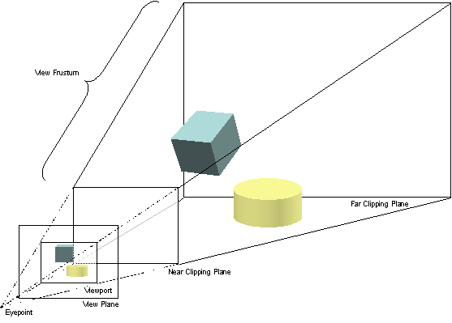
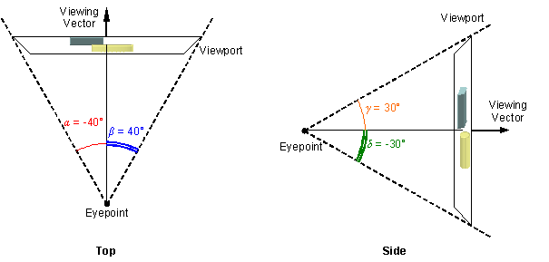
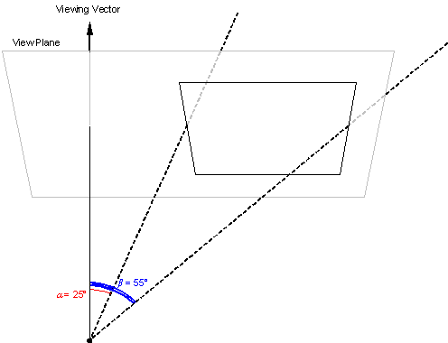

CIGI Host Emulator 3
|
CIGI Host Emulator 3 |
The viewing volume for a perspective projection is the frustum defined by the near and far clipping planes and the sides of the viewport. The viewport is an area on the view plane onto which objects within the view frustum are projected. The viewport generally corresponds to the display or a window. CIGI therefore assumes its size to be fixed. The following figure illustrates the concept of perspective projection of a three-dimensional viewing volume onto a two-dimensional viewport.

Perspective Projections onto a Viewport
Because the size of the display (and thus the viewport) is fixed, the dimensions of the view frustum are directly related to the position of the eyepoint. By designing the view eyepoint to correspond to the observer’s eye, a projection with an apparent one-to-one scale can be achieved.
The following diagram illustrates how a view is defined. Angle α is the left half-angle and angle β is the right half-angle. Angles γ and δ represent the top and bottom half-angles, respectively. The viewing vector corresponds to the observer’s line of sight and is perpendicular to the view plane.

View Definition Half-Angles
A view may be defined so that the sizes of angles α and β, and of angles γ and δ, are not equal. This produces an oblique view such as the one shown below:

Example of an Oblique Perspective View
The size of the view frustum can be set via the View Definition packet.
|
© 2008 The Boeing Company |
rev 3.3.0 |